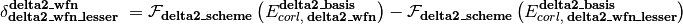

Here,  is an energy or energy extrapolation scheme, and the following also hold.
is an energy or energy extrapolation scheme, and the following also hold.


A translation of this ungainly equation to example [5] below is as follows. In words, this is a double- and triple-zeta 2-point Helgaker-extrapolated CCSD(T) coupled-cluster correlation correction appended to a triple- and quadruple-zeta 2-point Helgaker-extrapolated MP2 correlation energy appended to a SCF/aug-cc-pVQZ reference energy.
![E_{total}^{\text{CBS}} = \mathcal{F}_{\text{highest\_1}} \left(E_{total,\; \text{SCF}}^{\text{aug-cc-pVQZ}}\right) \; + \mathcal{F}_{\text{corl\_xtpl\_helgaker\_2}} \left(E_{corl,\; \text{MP2}}^{\text{aug-cc-pV[TQ]Z}}\right) \; + \delta_{\text{MP2}}^{\text{CCSD(T)}}](_images/math/234e164ef6b8d98f1bd0cac104963a877b89a88f.png)
![\delta_{\text{MP2}}^{\text{CCSD(T)}} \; = \mathcal{F}_{\text{corl\_xtpl\_helgaker\_2}} \left(E_{corl,\; \text{CCSD(T)}}^{\text{aug-cc-pV[DT]Z}}\right) - \mathcal{F}_{\text{corl\_xtpl\_helgaker\_2}} \left(E_{corl,\; \text{MP2}}^{\text{aug-cc-pV[DT]Z}}\right)](_images/math/018cd7aadafa5dd49354fc8f39513fb7e73b54a4.png)